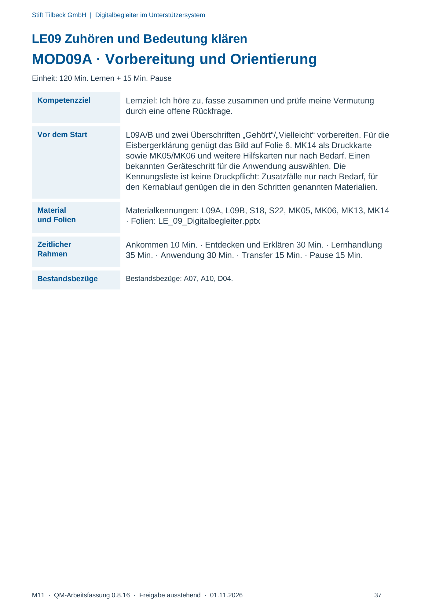
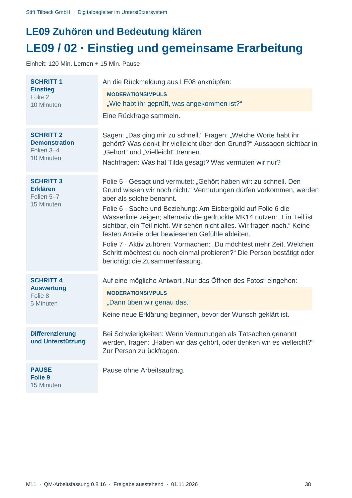
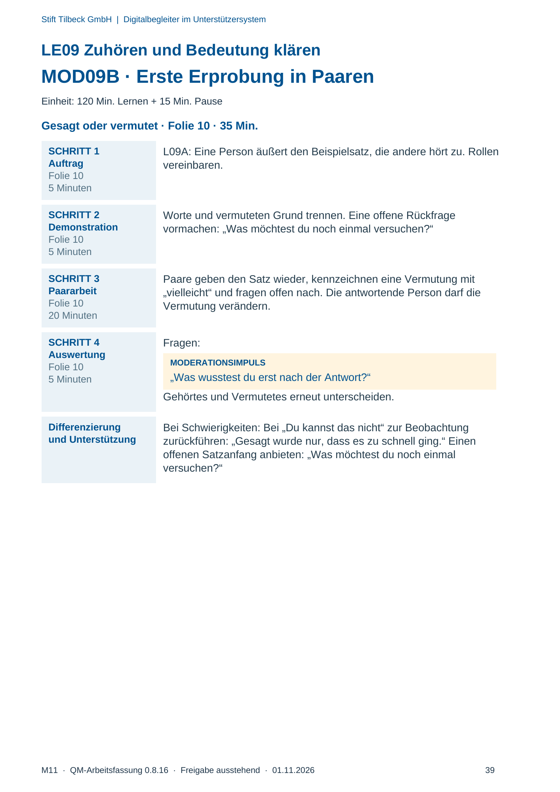
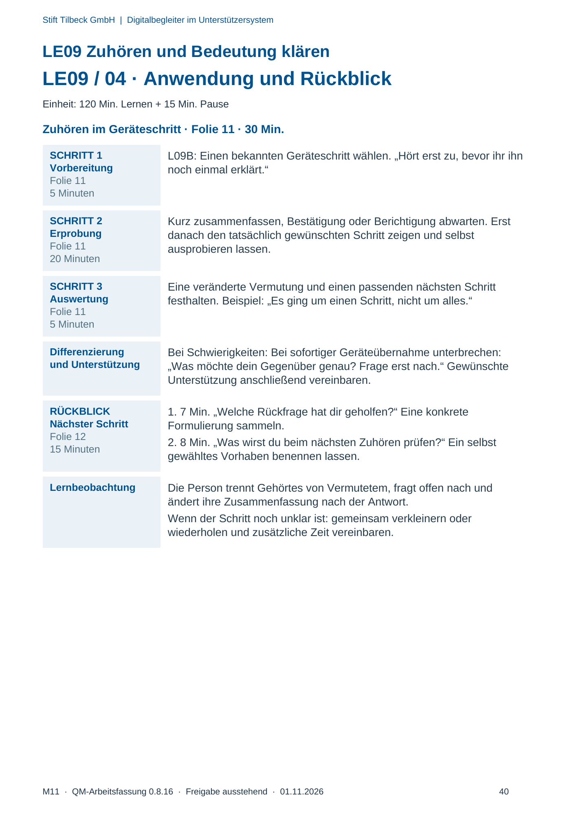

M11 · Originalseite 37, 38, 39, 40
Durchführungshilfe
Gezielte Original-Druckauswahl.
Fragen und Ankreuzfelder werden auf dem Ausdruck bearbeitet. Die Lesefassung speichert keine Antworten.
Lesefassung · Seite 37
Stift Tilbeck GmbH | Digitalbegleiter im Unterstützersystem
M11 · QM-Arbeitsfassung 0.8.16 · Freigabe ausstehend · 01.11.2026 37
LE09 Zuhören und Bedeutung klären
MOD09A · Vorbereitung und Orientierung
Einheit: 120 Min. Lernen + 15 Min. Pause
Kompetenzziel Lernziel: Ich höre zu, fasse zusammen und prüfe meine Vermutung
durch eine offene Rückfrage.
Vor dem Start L09A/B und zwei Überschriften „Gehört“/„Vielleicht“ vorbereiten. Für die
Eisbergerklärung genügt das Bild auf Folie 6. MK14 als Druckkarte
sowie MK05/MK06 und weitere Hilfskarten nur nach Bedarf. Einen
bekannten Geräteschritt für die Anwendung auswählen. Die
Kennungsliste ist keine Druckpflicht: Zusatzfälle nur nach Bedarf, für
den Kernablauf genügen die in den Schritten genannten Materialien.
Material
und Folien
Materialkennungen: L09A, L09B, S18, S22, MK05, MK06, MK13, MK14
· Folien: LE_09_Digitalbegleiter.pptx
Zeitlicher
Rahmen
Ankommen 10 Min. · Entdecken und Erklären 30 Min. · Lernhandlung
35 Min. · Anwendung 30 Min. · Transfer 15 Min. · Pause 15 Min.
Bestandsbezüge Bestandsbezüge: A07, A10, D04.
Originalseite ansehen

Lesefassung · Seite 38
Stift Tilbeck GmbH | Digitalbegleiter im Unterstützersystem
M11 · QM-Arbeitsfassung 0.8.16 · Freigabe ausstehend · 01.11.2026 38
LE09 Zuhören und Bedeutung klären
LE09 / 02 · Einstieg und gemeinsame Erarbeitung
Einheit: 120 Min. Lernen + 15 Min. Pause
SCHRITT 1
Einstieg
Folie 2
10 Minuten
An die Rückmeldung aus LE08 anknüpfen:
MODERATIONSIMPULS
„Wie habt ihr geprüft, was angekommen ist?“
Eine Rückfrage sammeln.
SCHRITT 2
Demonstration
Folien 3–4
10 Minuten
Sagen: „Das ging mir zu schnell.“ Fragen: „Welche Worte habt ihr
gehört? Was denkt ihr vielleicht über den Grund?“ Aussagen sichtbar in
„Gehört“ und „Vielleicht“ trennen.
Nachfragen: Was hat Tilda gesagt? Was vermuten wir nur?
SCHRITT 3
Erklären
Folien 5–7
15 Minuten
Folie 5 · Gesagt und vermutet: „Gehört haben wir: zu schnell. Den
Grund wissen wir noch nicht.“ Vermutungen dürfen vorkommen, werden
aber als solche benannt.
Folie 6 · Sache und Beziehung: Am Eisbergbild auf Folie 6 die
Wasserlinie zeigen; alternativ die gedruckte MK14 nutzen: „Ein Teil ist
sichtbar, ein Teil nicht. Wir sehen nicht alles. Wir fragen nach.“ Keine
festen Anteile oder bewiesenen Gefühle ableiten.
Folie 7 · Aktiv zuhören: Vormachen: „Du möchtest mehr Zeit. Welchen
Schritt möchtest du noch einmal probieren?“ Die Person bestätigt oder
berichtigt die Zusammenfassung.
SCHRITT 4
Auswertung
Folie 8
5 Minuten
Auf eine mögliche Antwort „Nur das Öffnen des Fotos“ eingehen:
MODERATIONSIMPULS
„Dann üben wir genau das.“
Keine neue Erklärung beginnen, bevor der Wunsch geklärt ist.
Differenzierung
und Unterstützung
Bei Schwierigkeiten: Wenn Vermutungen als Tatsachen genannt
werden, fragen: „Haben wir das gehört, oder denken wir es vielleicht?“
Zur Person zurückfragen.
PAUSE
Folie 9
15 Minuten
Pause ohne Arbeitsauftrag.
Originalseite ansehen

Lesefassung · Seite 39
Stift Tilbeck GmbH | Digitalbegleiter im Unterstützersystem
M11 · QM-Arbeitsfassung 0.8.16 · Freigabe ausstehend · 01.11.2026 39
LE09 Zuhören und Bedeutung klären
MOD09B · Erste Erprobung in Paaren
Einheit: 120 Min. Lernen + 15 Min. Pause
Gesagt oder vermutet · Folie 10 · 35 Min.
SCHRITT 1
Auftrag
Folie 10
5 Minuten
L09A: Eine Person äußert den Beispielsatz, die andere hört zu. Rollen
vereinbaren.
SCHRITT 2
Demonstration
Folie 10
5 Minuten
Worte und vermuteten Grund trennen. Eine offene Rückfrage
vormachen: „Was möchtest du noch einmal versuchen?“
SCHRITT 3
Paararbeit
Folie 10
20 Minuten
Paare geben den Satz wieder, kennzeichnen eine Vermutung mit
„vielleicht“ und fragen offen nach. Die antwortende Person darf die
Vermutung verändern.
SCHRITT 4
Auswertung
Folie 10
5 Minuten
Fragen:
MODERATIONSIMPULS
„Was wusstest du erst nach der Antwort?“
Gehörtes und Vermutetes erneut unterscheiden.
Differenzierung
und Unterstützung
Bei Schwierigkeiten: Bei „Du kannst das nicht“ zur Beobachtung
zurückführen: „Gesagt wurde nur, dass es zu schnell ging.“ Einen
offenen Satzanfang anbieten: „Was möchtest du noch einmal
versuchen?“
Originalseite ansehen

Lesefassung · Seite 40
Stift Tilbeck GmbH | Digitalbegleiter im Unterstützersystem
M11 · QM-Arbeitsfassung 0.8.16 · Freigabe ausstehend · 01.11.2026 40
LE09 Zuhören und Bedeutung klären
LE09 / 04 · Anwendung und Rückblick
Einheit: 120 Min. Lernen + 15 Min. Pause
Zuhören im Geräteschritt · Folie 11 · 30 Min.
SCHRITT 1
Vorbereitung
Folie 11
5 Minuten
L09B: Einen bekannten Geräteschritt wählen. „Hört erst zu, bevor ihr ihn
noch einmal erklärt.“
SCHRITT 2
Erprobung
Folie 11
20 Minuten
Kurz zusammenfassen, Bestätigung oder Berichtigung abwarten. Erst
danach den tatsächlich gewünschten Schritt zeigen und selbst
ausprobieren lassen.
SCHRITT 3
Auswertung
Folie 11
5 Minuten
Eine veränderte Vermutung und einen passenden nächsten Schritt
festhalten. Beispiel: „Es ging um einen Schritt, nicht um alles.“
Differenzierung
und Unterstützung
Bei Schwierigkeiten: Bei sofortiger Geräteübernahme unterbrechen:
„Was möchte dein Gegenüber genau? Frage erst nach.“ Gewünschte
Unterstützung anschließend vereinbaren.
RÜCKBLICK
Nächster Schritt
Folie 12
15 Minuten
1. 7 Min. „Welche Rückfrage hat dir geholfen?“ Eine konkrete
Formulierung sammeln.
2. 8 Min. „Was wirst du beim nächsten Zuhören prüfen?“ Ein selbst
gewähltes Vorhaben benennen lassen.
Lernbeobachtung Die Person trennt Gehörtes von Vermutetem, fragt offen nach und
ändert ihre Zusammenfassung nach der Antwort.
Wenn der Schritt noch unklar ist: gemeinsam verkleinern oder
wiederholen und zusätzliche Zeit vereinbaren.
Originalseite ansehen
